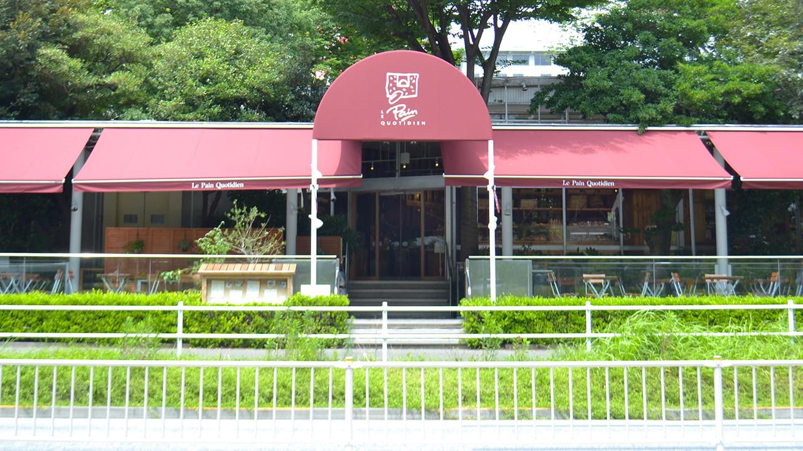

Prince Park Tower Tips
Walkables around Prince Park Hotel
These are walkable options around Prince Park Hotel.
| Location | Description |
|---|---|
| French Food: Le Pain Quotidien Shiba Park 3-3-1 Shibakoen, Minato City Google Maps |

A bakery-restaurant serving simple, wholesome, and sustainable food. Known for their organic bread and communal tables. |